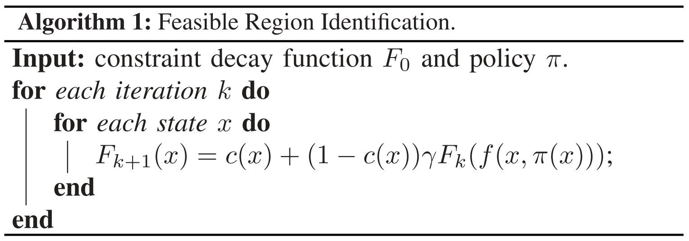
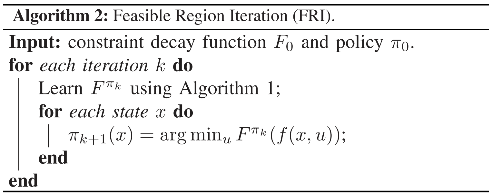
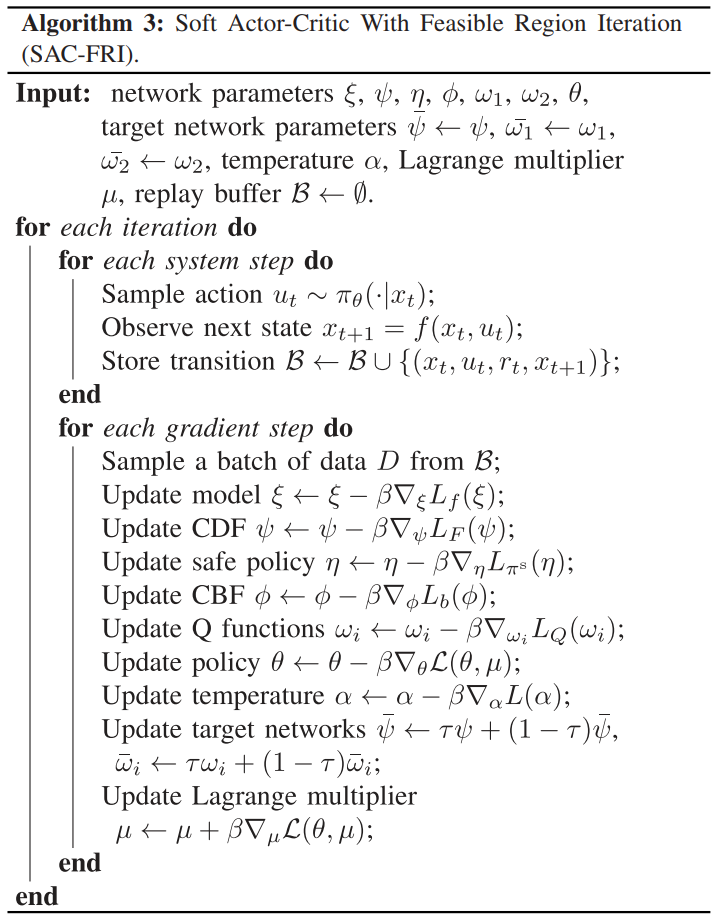
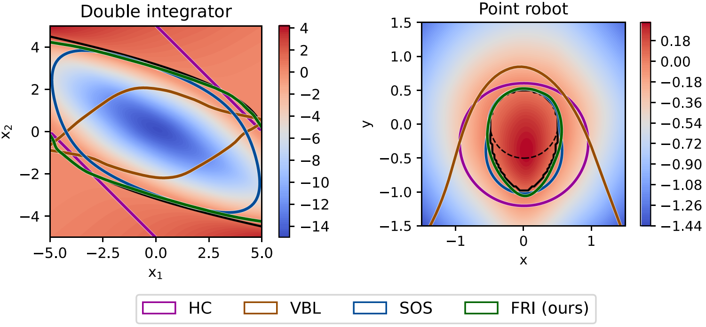
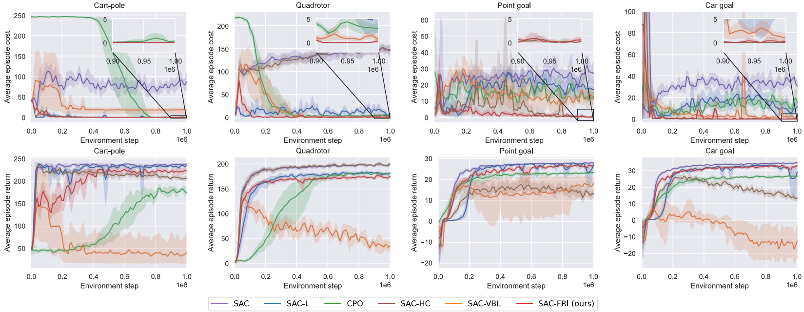
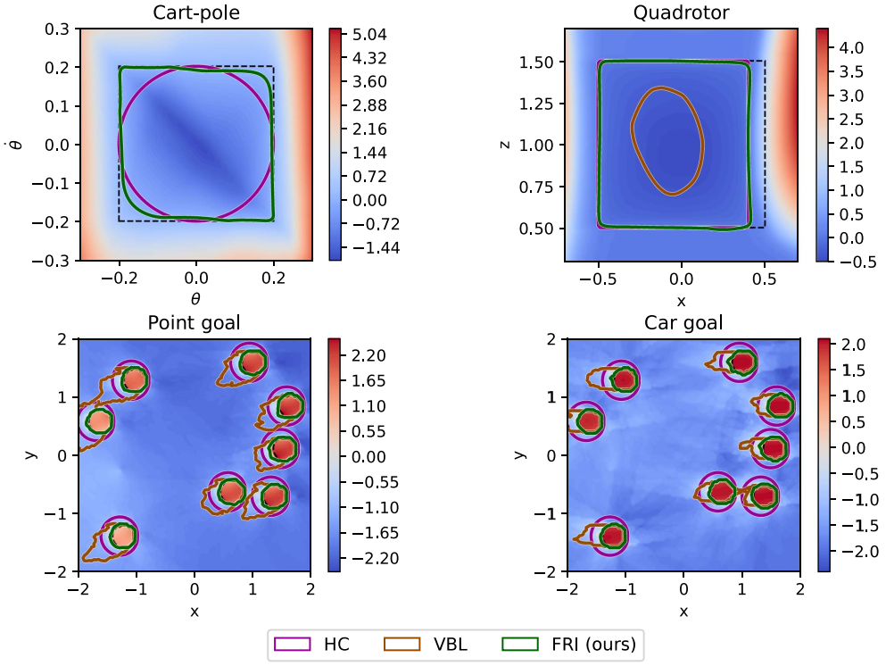

Safety is a critical concern when applying reinforcement learning (RL) to real-world control problems. A widely used method for ensuring safety is to learn a control barrier function with heuristic feasibility labels that come from expert demonstrations or constraint functions. However, their forward invariant sets fall short of the maximum feasible region because of inaccurate labels. This paper proposes an algorithm called feasible region iteration (FRI) that learns the maximum feasible region to generate accurate feasibility labels. The core of FRI is a constraint decay function (CDF), which comes with a self-consistency condition and naturally leads to the constraint Bellman equation. The optimal CDF, which represents the maximum feasible region, is learned through the iteration of feasible region identification and feasible region expansion. Experiment results show that our algorithm achieves near-zero constraint violations and comparable or higher performance than the baselines.
Finding the feasible region of a given policy: 
Finding the maximum feasible region of a control system: 
Safe RL with FRI: 
CBFs on classic control tasks:
Safe RL training curves on safety-critical control tasks:
CBFs on safety-critical control tasks:
